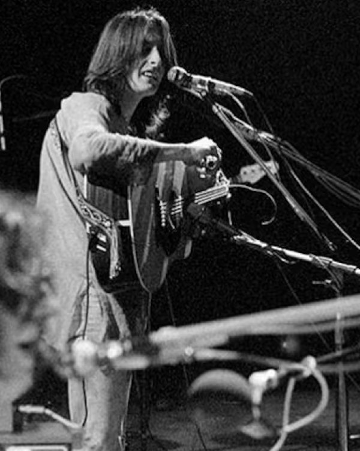
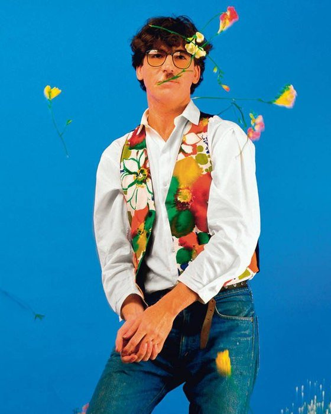
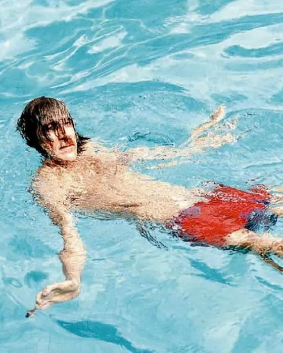

Los capítulos, uno por uno
Sui Géneris
Cuando el rock desafió al poder
Censura, juventud y canciones que se negaron a obedecer.
“Le cambió la cabeza a una generación.”

Sui Géneris pasó de ser un inofensivo grupo de música hippie a representantes sociales censurados por las instituciones.
recorte
…crecimos con el fantasma de la represión policial/militar a flor de piel.
recorte
La Máquina
Hacer música en tiempos de miedo
Un país bajo el terror y una banda que buscaba una salida.
“Charly se estaba posicionando como la voz de los que no tenían voz.”
Charly fue uno de los que se quedó.
recorte
Charly nos habla de la pesadilla que estábamos viviendo todos los argentinos en 1977.
recorte
Serú Girán
Canciones contra el silencio
La dictadura, las metáforas y el lenguaje de la resistencia.
“Mirá que somos cinco mil contra uno, eh?”
Charly sabía que los militares pensaban que el rock era inofensivo.
recorte
…nadie pescó en su momento la profundidad del mensaje.
recorte
Malvinas
Malvinas: rock en la línea de fuego
La guerra, el regreso a la escena pública y la voz de una generación.
“No empezó siendo una canción política y terminó siéndolo.”
…estar en guerra con el país que produjo toda esa música que tanto quería.
recorte
…eran épocas donde podías caer preso y luego no saberse nada de vos.
recorte
Regreso democrático
La democracia sonaba a rock
De la esperanza al desencanto: los ochenta a través de las canciones.
“¿Y ahora qué? ¿Hay que romper todo?”

…un grito de libertad y un grito en donde también Charly se asume como estrella de rock.
recorte
Atrás quedaban esos aires de libertad y utopías.
recorte
Say No More
Los noventa: caos y genialidad
El artista, el personaje público y las contradicciones de una década.
“Ya basta de palabras. Resistir como sea.”
Charly fue siempre un espejo de su tiempo.
recorte
Denle una bienvenida a las Madres de Plaza de Mayo, mis amigas.
recorte
El derrumbe
2001: el país que se vino abajo
En la crisis final, las canciones seguían contando una historia.
“El testimonio que hace Charly de nuestra historia, es vivencial y espiritual.”

Raramente, Charly no escribió ningún tema referido a ésta época.
recorte
‘Juan Represión’ […] finalmente pudo ser editado sin ningún tipo de censura.
recorte
Archivo sonoro
Leer y escuchar: las canciones y los discos del recorrido, capítulo por capítulo.
- 01 Botas LocasSui Géneris · Instituciones · 1974 Buscar en Spotify ↗
- 02 Qué se puede hacer salvo ver películasLa Máquina de Hacer Pájaros · Películas · 1977 Buscar en Spotify ↗
- 03 Canción de Alicia en el PaísSerú Girán · Bicicleta · 1980 Buscar en Spotify ↗
- 04 No bombardeen Buenos AiresCharly García · Yendo de la cama al living · 1982 Buscar en Spotify ↗
- 04 Los dinosauriosCharly García · Clics modernos · 1983 Buscar en Spotify ↗
- 05 Demoliendo hotelesCharly García · Piano Bar · 1984 Buscar en Spotify ↗
- 05 Cerca de la revoluciónCharly García · Piano Bar · 1984 Buscar en Spotify ↗
- 06 Chipi-ChipiCharly García · La hija de la lágrima · 1994 Buscar en Spotify ↗
- 06 El aguanteCharly García · El Aguante · 1998 Buscar en Spotify ↗
- 07 Sinfonías para adolescentesSui Géneris · Álbum · 2000 Buscar en Spotify ↗